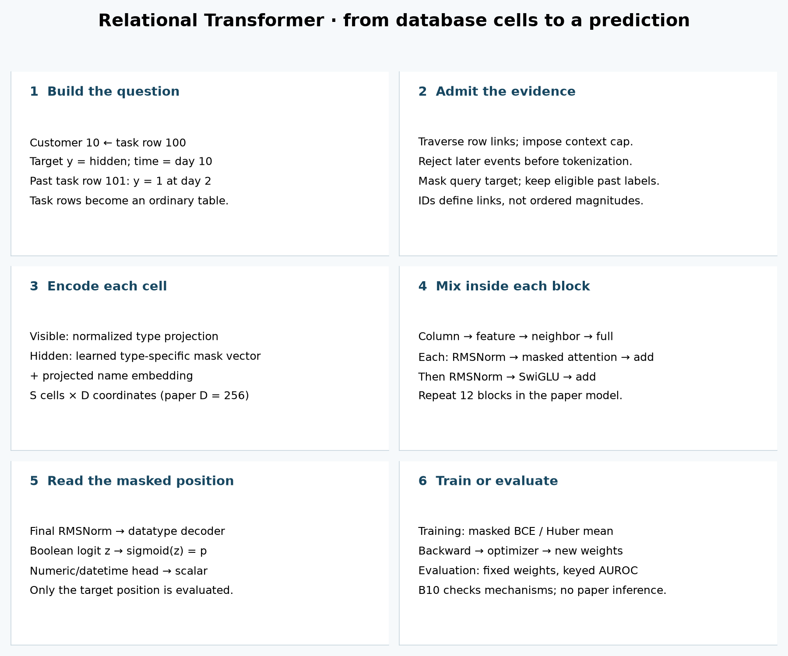
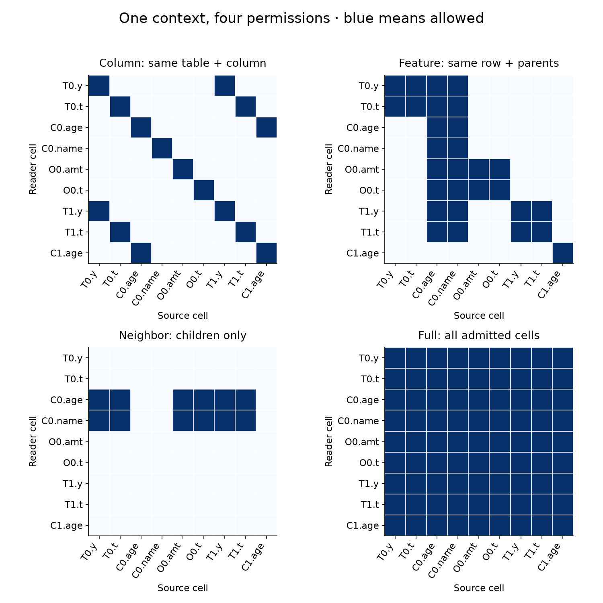
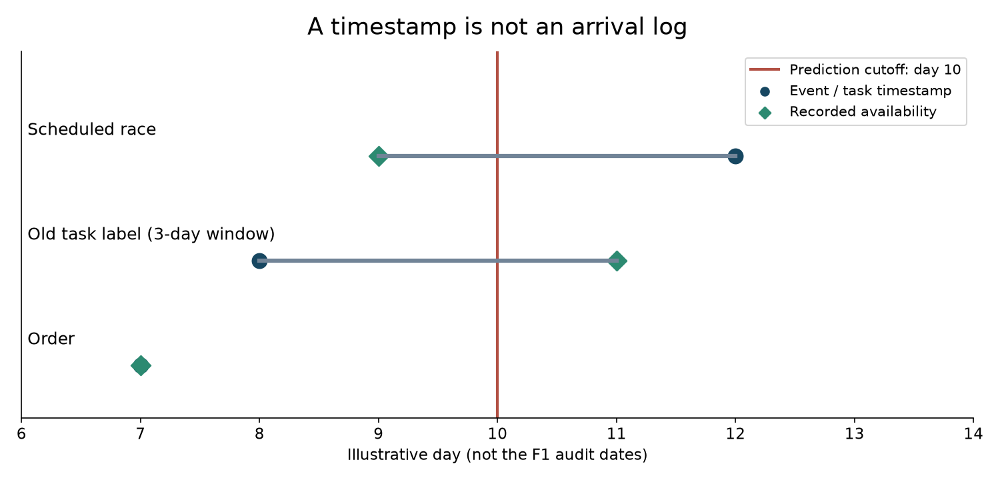

B10 · Let database cells talk¶
Relational Transformer · one skill: construct the information paths that let a masked task cell use a relational database.
B09: cost frontier · Student lab · Executed solution · Field guide
Begin with the gap¶
B07 showed how table and column meanings can inform a predictor. B09 showed that a prediction's cost depends on the complete operating configuration. Neither single-table view tells us how to preserve a customer–order relationship when one customer has many orders. Flattening can duplicate customer values or discard which order belongs to whom.
Relational Transformer (RT) makes each cell a token and uses database relationships to control attention. A token is a vector representing one input item. Attention reads other token vectors through weighted sums. Today you will trace a particular prediction all the way from a task row to its output, then identify which evidence it was permitted to use. That is a prerequisite for the mission's claim that relational structure adds value.
The primary reading is RT-v1 §§3–5 and Appendix H. Use the pinned original model alongside it. The current repository's default example uses RT-J; that is a different release and recipe.
Retrieve before reading¶
Without notes: Why is a query target hidden? How can a model make a zero-gradient prediction while still using labels? Why does an event timestamp alone fail to prove what was known at prediction time?
Prerequisite recap. A primary key identifies a row. A foreign key points to another table's primary key. A parent is the referenced row; a child is a row containing that reference. A task table stores the prediction examples, their entity references, their cutoffs, and their labels. A cutoff is the time at which the prediction must be made. A label's outcome window may finish later than that cutoff.
1 · Turn a task into another table¶
Worked example. Customer C0 is customer 10. Order O0 belongs to C0 and has amount 6 at day 7. A task row T0 asks whether C0 will churn after day 10. Its target is hidden. Another task row T1 records a completed, earlier outcome for the same customer.
| Table / row | Cells in our worked context | Link |
|---|---|---|
| Task T0, row 100 | hidden y, time 10 | customer 10 |
| Customer C0, row 10 | age 42, name embedding | none |
| Order O0, row 20 | amount 6, time 7 | customer 10 |
| Task T1, row 101 | observed y = 1, time 2 | customer 10 |
| Customer C1, row 11 | age 20 | none |
There are three tables, five rows, and nine feature cells. The lab adds one padding slot to check that padding cannot become evidence. IDs are relationship metadata; the model does not learn that customer 11 is “larger” than customer 10. Name embeddings are vectors encoding text, not numerical row IDs.
Why integrate the task? A forecasting target is not usually an existing feature cell. Adding a task table gives it a cell address. Masking that cell turns forecasting into the same kind of prediction interface as filling in a missing database value. Past task labels can remain visible if the evaluation policy permits them.
Sampling comes first. A context is the bounded set of cells admitted for one prediction. RT-v1 expands from a seed task row along foreign-key links; it bounds child expansion and caps the cell count. A relevant row outside this context cannot influence this prediction. The temporal rule belongs here, before attention. Paper §3.1
2 · Model architecture: follow one hidden cell¶
In plain terms. Give every cell a value/type representation and a name representation. Let cells exchange information along four kinds of permission. Read the updated hidden cell through the decoder for its datatype.

- Question: customer10 → task row100 → hidden y at day10.
- Context: sample linked rows, enforce visibility, replace the target value.
- Tokens: type-specific value or mask vector + name vector → S×D states.
- Block: column → feature → neighbor → full attention, with normalization and residual additions; then SwiGLU. Paper:12blocks.
- Output: final normalization → typed decoder → target probability.
- Objective: masked BCE/Huber for training; fixed-weight, keyed scoring for evaluation.
Encode. A numeric, boolean or datetime value enters its own learned linear projection. A text value enters a projection of its frozen language-model embedding. The name representation is projected separately. A linear projection multiplies a vector by a weight matrix and adds a bias. RT-v1 normalizes these streams before adding them. For a hidden cell, a learned type-specific mask vector replaces the value stream; its name remains available.
Names and identities differ. Column attention uses table/column identities, while the encoder receives semantic name vectors. The source calls the latter col_name_values; the preprocessing supplies name text that includes context such as “year of races.” Matching integer column IDs across different tables is insufficient to grant column attention.
Mix. In each block, column attention runs first, then feature, neighbor and full attention. Each sublayer normalizes its input and adds its update back to the running state. This residual addition preserves an existing representation while learning a correction. RMSNorm divides by a root-mean-square scale and applies learned coordinate weights. A final feed-forward transformation changes each cell vector separately. RT-v1 uses SwiGLU: one projected stream, passed through a smooth activation, multiplies another projected stream before projection back to the hidden width.
Decode. After the final normalization, a datatype-specific linear head produces a scalar for numeric/datetime/boolean values. A boolean head emits a logit, an unrestricted real number. The sigmoid function, 1/(1+exp(−z)), turns logit z into a probability. The model returns outputs at many cells; evaluation selects the target cell. Source model
Train. Binary cross-entropy penalizes wrong boolean probabilities. Huber loss is quadratic near a numeric target and linear for larger errors, reducing extreme residual influence. The source averages losses over masked cells, not over all context cells. Its text decoder exists, but this release rejects masked-text supervision. The lab shows the forward path, loss and an optimization step; its measured work is output/gradient verification, not training a foundation model.
3 · Four masks, four questions¶
An attention mask is a Boolean matrix. Row i is the cell doing the reading; column j is a possible information source. True means that pair is allowed. The mask does not specify how much attention a permitted source receives.
| Sublayer | Reader may read | Worked path |
|---|---|---|
| Column | same column and same table | T0.y → T1.y |
| Feature | own row and linked parent rows | T0.y → C0.age and C0.name |
| Neighbor | linked child rows | C0.age → O0.amount and T0.y |
| Full | every admitted, non-padding cell | T0.y → O0.amount directly |
Arrows here mean “reader reads source,” not the direction a value travels. Feature and neighbor attention are directed opposites for linked rows. Neighbor attention does not automatically include the reader's own row. An empty neighbor set should contribute the zero vector.
Who can this cell read?
Choose a reader and a permission. Blue outline marks the reader; “Allowed” marks readable sources.
The interactive readout uses one illustrative value coordinate: [0,10,42,1,6,7,1,2,20]. Zero at T0.y represents a mask coordinate, not a leaked target. The “1” at C0.name is one invented embedding coordinate, not a numeric encoding of a person's name.
Worked attention arithmetic. With equal logits, T0.y's feature attention reads T0.y, T0.time, C0.age and C0.name. The coordinate average is (0+10+42+1)/4 = 13.25. Neighbor attention at that same task row reads no children and returns zero. This shows permission and normalization; it is not the model's churn probability.
From equal weights to learned weights. The model projects hidden vectors into queries Q, keys K and values V. Each query–key dot product is divided by √d, where d is the per-head width. Softmax exponentiates the permitted scores and normalizes them to sum to one. Multiplying those weights by V produces the update. Multiple heads perform this with separate coordinate groups. A fully forbidden row needs special handling because softmax of only negative infinities is undefined.

Why keep relational masks if full attention exists? Permissions alone do not describe an entire architecture. Separate sublayers apply different projections and normalizations to different relation patterns in a particular order. The full sublayer then mixes their results. RT's ablations test the usefulness of this structure. Our fixture checks its implementation; it does not estimate its accuracy benefit.
4 · A mask cannot undo evidence admitted too early¶
In plain terms. Hiding the answer is necessary, but it does not hide every clue that arrived after the prediction time. Once a future cell enters the context, full attention can spread it to the target.
Three clocks matter. Event time says when the recorded event happens. Availability time says when the information could actually be used. Outcome completion says when enough future has elapsed to determine an earlier task label. They need not coincide.
Worked example. At day 10, an order at day 7 is eligible. A task label anchored at day 8 with a three-day outcome window is not yet known. A race scheduled for day 12 may have been announced at day 9: it is future-dated but potentially already known. A strict event-time policy still excludes it; a historically valid availability policy would need trustworthy arrival records before allowing it.
Three clocks, one context

The notebook's eligible_rows enforces event time, recorded availability and completed label windows together. Unknown timestamps fail closed. This is a deliberately strict course policy, separate from the original RT sampler. The query task row is constructed as the prediction question and its target is hidden; eligible_rows filters candidate evidence rows, not the question itself.
The actual reproduction blocker. B10 independently replays all three authenticated L175 saved-context seeds: 702 queries each, 2,156,544 cell slots total. It reconstructs each target from raw F1 results and checks complete (driverId, cutoff) keys. There are 385 future-dated cells in 77 contexts, all inherited race schedule fields. There are zero exposed query targets and zero visible task labels whose outcome windows are unfinished. Another 432,050 cells have unknown timestamps.
Those findings are compatible: hiding the target worked while the stated event-time boundary failed. The future fields might have been announced earlier; no arrival logs establish that. Unknown time also does not mean proven future leakage. Read the fresh B10 audit receipt and original detailed contract.
5 · What did we actually reproduce?¶
B10-MECHANISM fixes one three-table relationship fixture and uses seeds 0/1/2 for illustrative input vectors and model weights. Numeric and datetime cells are additionally masked in the parity fixture to exercise all supported loss heads. It copies weights into the course mirror and original source, then compares every output, loss, parameter gradient and floating input gradient. The source uses an explicitly substituted CPU attention backend. Twenty additional graph fixtures check the masks against independent scalar loops.
| Seed | Max output error | Max parameter-gradient error | Permutation error | Hidden-target prediction change |
|---|---|---|---|---|
| 0 | 3.33e-16 | 2.22e-16 | 4.44e-16 | 0.0 |
| 1 | 4.44e-16 | 9.71e-17 | 6.66e-16 | 0.0 |
| 2 | 3.33e-16 | 2.78e-16 | 6.66e-16 | 0.0 |
All three pass the predeclared 1e-9 absolute tolerance. Loss and floating-input gradients also pass. The 8,400 pair checks include padding; three wrong learner functions are rejected. These are numerical verification errors, not benchmark metric improvements.
Permutation test. Reordering all cells and their metadata together must reorder the output cells without changing their meaning. This is equivariance. The prediction attached to the same query key is invariant. Shuffling names alone is different: it changes semantic input. Our untrained fixture responds to that intervention, but this does not demonstrate that pretrained name semantics improve accuracy.
Hidden-target test. Changing the held-out value must not change predictions, because its value stream was replaced. The supervised loss should change, because the target remains the answer used for scoring. Input access and loss access are different pathways.
Scope check. Checks use two blocks, width 16, four heads, FF width 32, six-coordinate illustrative name vectors and CPU float64. The paper model uses 12 blocks, width 256, eight heads, FF width 1024, MiniLM width 384 and bfloat16. Passing finite-fixture CPU checks does not establish CUDA-kernel parity, pretrained behavior, fresh benchmark inference, or whole-paper reproduction.
Named paper lane. RT-v1 Table 1 reports 82.0% AUROC for database-held-out rel-f1/driver-dnf. B10 pins its original source/data/checkpoint identity and preserves a three-seed, full-702-query inference operator. Because the input gate fails, checkpoint bytes remain unauthenticated and inference is NOT_RUN. The wrapper refuses before loading a model. The remaining GPU execution path is unvalidated. Reproduction protocol and commands
6 · Zero-shot has several boundaries¶
Unseen task means that task was excluded from the declared training stage. Unseen database means the entire target database was excluded. No target gradients means no model parameter updates on the target task. None of these phrases alone guarantees no target labels in the context, no target validation during checkpoint selection, or a historically sealed test set.
RT-v1 can exploit past task rows for the target entity. Its contextual labels make a “zero-shot” prediction different from a prediction with no labeled evidence. The paper's self-label ablation is useful precisely because it asks how much this pathway matters. State the label-access policy before interpreting a score. Paper §5.1
RT-J update. The author project retains a cell-based relational backbone but changes the surrounding corpus, supervision and retrieval recipe. The current quickstart uses RT-J; its checkpoint and preprocessing cannot substitute for RT-v1's Table 1. Treat it as a separate candidate with separate provenance. Author page · Official repository
Lab · build, falsify, explain¶
Open the student notebook. Complete three live functions: table-qualified directed masks, safe masked attention, and temporal eligibility. The visible model calls your mask and attention functions. The visibility function controls which evidence reaches an intervention prediction. Immediate checks reject common wrong implementations. The solution includes author-reference evidence with honest labels; you have not completed the lab merely by viewing it.
- Predict T0.y's allowed sources under all four masks before using the widget.
- Implement the three functions and pass the checks. Explain why the empty-neighbor result is zero.
- Change a hidden target, permute cell order, then change name vectors. Explain why the first two preserve the keyed prediction and the third need not.
- Defend the temporal gate. Distinguish an event-time violation from proof of unavailable historical information.
Exit ticket. Submit your functions, check outputs, and a 150-word explanation of one task-cell path. Include one counterexample to “zero-shot means no labels” and one reason the 82.0% paper result is not reproduced here. Status remains PENDING_WRITTEN_DEFENSE until assessed.
Revisit the four masks after 1, 7 and 30 days without the diagram. Ask the teaching agent follow-up questions about any unclear step. B11 will compare supervised RelGNN and RelGT on matched relational evidence: preserve the distinction between a row graph, a row token and a cell token.